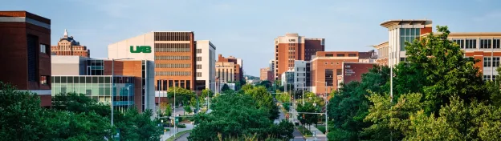

阿拉巴马大学伯明翰分校 (UAB) 医学计算机交叉方向博士后博士招聘
原文：https://mp.weixin.qq.com/s?__biz=MzAwMzIzOTk5OQ==&mid=2247528420&idx=2&sn=0ca1decdc326d9cc6a0a096d86f2fe75&chksm=9b3c16b4ac4b9fa29b86365fc69443c25ee37c17552bb4a8ba81c45c3dddd71a68a5b7aa1ab1#rd 合集：求职/求学/招聘
01
写在前面
我们长期发布招聘/求职板块(甚至我给自己都发了求职：Biomamba求职| 国奖+4篇一作SCI)，欢迎各位老师/老板欢迎联系~我们也在招贤纳士：Biomamba生信基地诚招运营。其它需要求职的小伙伴也欢迎把简历发给我们[Biomamba_yunying]，大家一起找工作/学习。用人单位也可以联系我们免费刊登招聘信息~
02
ABOUT US

窦锦壮博士即将入职阿拉巴马大学伯明翰分校 (UAB) 生物医学信息学与数据科学系,担任 tenure-track 助理教授。Dou Lab 的实验室网站是 https://jinzhuangdou.github.io/doulab.github.io/。Dou Lab主要研究方向:运用计算机科学和统计方法,分析大规模的癌症和复杂疾病数据,构建模型实现疾病预测。
导师简介• 本科及硕士:中国海洋大学 数学科学院 应用数学系 (2005-2009; 2009-2012)• 博士学位:中国海洋大学 海洋生命学院 (2012-2015)• 博士后: 新加坡基因组研究所 (2015-2018)• 数据科学家: 美国 MD Anderson Cancer Center (2018-至今)窦博士积极参与多个国际领先的计算生物学科研组织和项目,包括: 新加坡万人基因组计划 (SG10K)人类细胞图谱联盟 (HCA); 癌症细胞图谱联盟 (HTAN) 和癌症登月计划 (Cancer Moonshot)等。科研成果以第一作者或共同第一作者身份发表在 Nature Biotechnology, Cell, Science Advance, Genome Biology, Brief in Bioinformatics 等, 并获得2023 MD Anderson ‘Wall of Science’ award。窦博士已经和癌症生物学家，免疫学家，流行病学家等建立了广泛的合作。博士后或学生将有机会加入国际领先计算生物组织，为以后的学术或工业界的职业发展建立基础。现面向社会公开招聘博士后1名，博士生1-2 名，具体如下：
03
JOIN US
一、岗位招聘
1、博士后(1名)：欢迎具有生物统计学、生物信息学、计算生物学、人类遗传学、计算机科学或相关领域博士学位的申请者。
- 在人类遗传学方面有扎实的背景。 有在人类遗传学、生物统计学和相关学科的学术或研究经验。具有处理UK Biobank/TOPMed基因组数据并分析大规模和单细胞基因组数据的经验者优先。
- 计算与技术技能。 精通R、Python和Shell脚本。熟练使用Linux服务器，包括批处理作业提交以及在高性能计算（HPC）环境中的工作经验。
- 沟通与协作能力。 具有优秀的书面和口头沟通能力。具备在跨学科研究环境中有效协作的能力。
2、博士生（1-2名）欢迎具有数学和计算机科学方面的背景，并对其在医学中的应用感兴趣的同学申请。申请时间：2025年8月1日 - 2025年12月31日。开始时间：2026年8月。招生要求：美国相当于学士学位（4年制）在STEM（科学、技术、工程、数学）领域。国际学生需要提供雅思成绩（不低于6.5）/托福成绩（不低于80。GPA要求：大于3.0。博士申请前可以提前联系 jinzhuangdou198706@gmail.com, 申请后只要学院的pre-screen interview通过后就可以直接在Dou Lab 从事PhD 研究。二、薪酬待遇博士后申请者薪酬按照NIH最新标准https://www.niaid.nih.gov/grants-contracts/salary-cap-stipends， 起薪为每年6.1万美元。全力协助博士后申请相关项目，根据研究兴趣协助职业发展规划

最后聊聊
 关于 UAB 医学院: 在《美国新闻与世界报道 (U.S. News & World Report)》最佳医学院排名中,UAB 医学院始终位居全美前 30 名。在2023 年,医学院获得约 2.74 亿美元的NIH科研资助,位列美国所有医学院的第 27位。
关于 UAB 医学院: 在《美国新闻与世界报道 (U.S. News & World Report)》最佳医学院排名中,UAB 医学院始终位居全美前 30 名。在2023 年,医学院获得约 2.74 亿美元的NIH科研资助,位列美国所有医学院的第 27位。